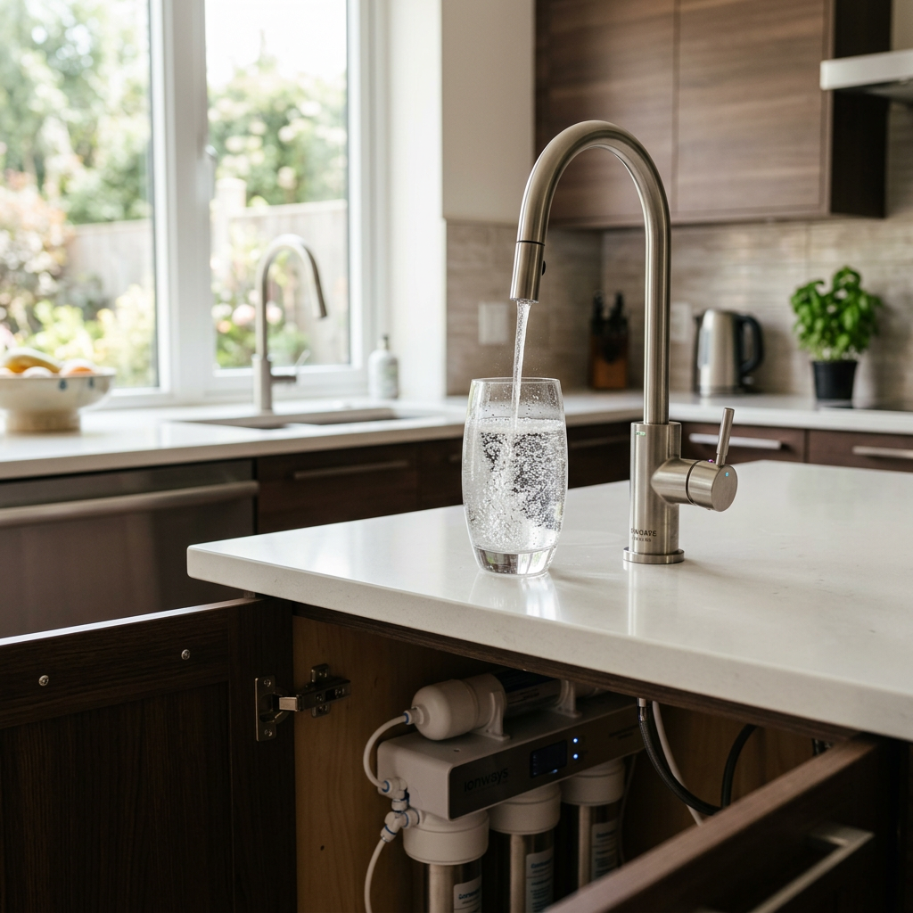
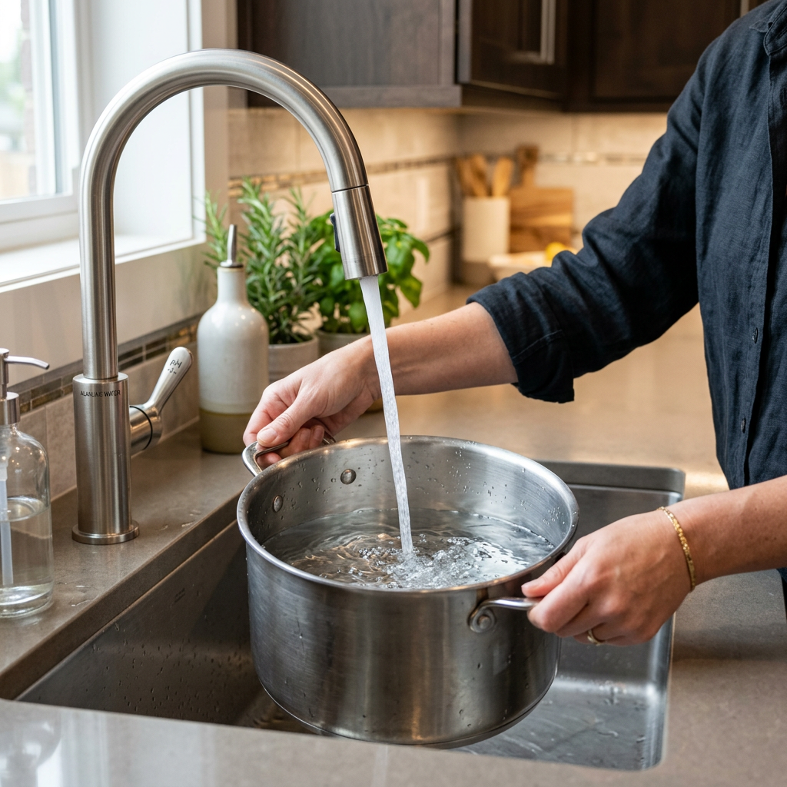
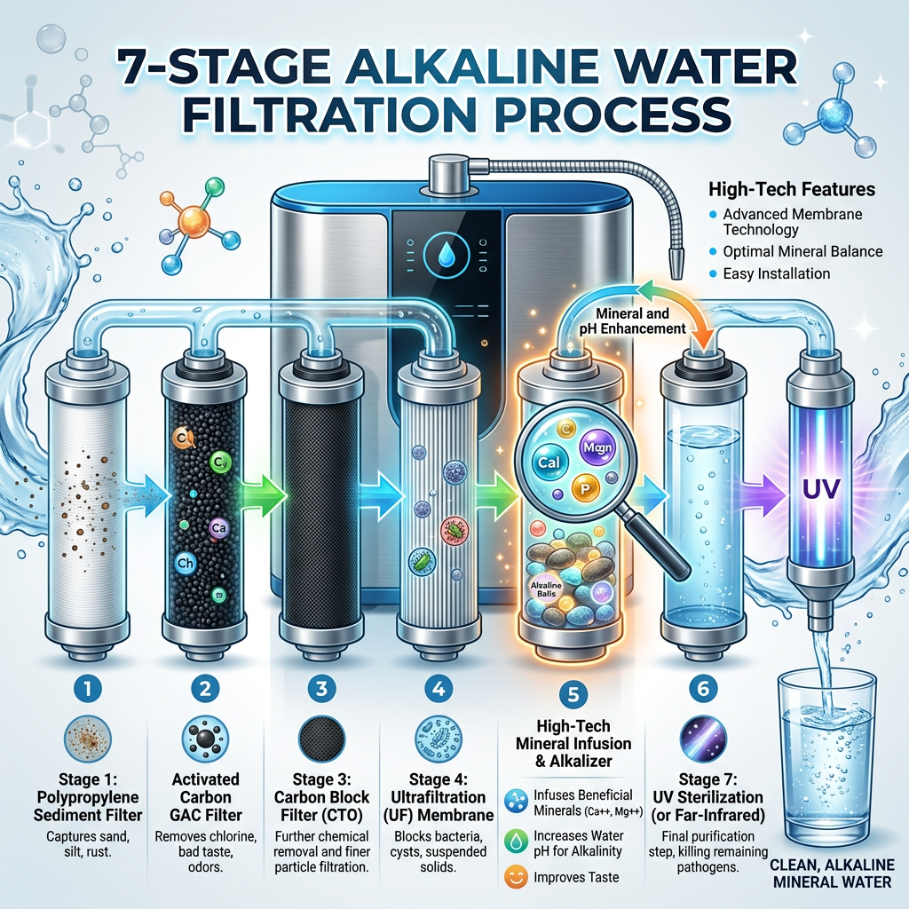

Best Alkaline Water Filter for Kitchen: The Ultimate Guide to Healthy Hydration
Why You Need an Alkaline Water Filter for Kitchen Use Today
In the modern world, the quality of our tap water is increasingly under scrutiny. While standard municipal treatments remove basic pathogens, they often leave behind heavy metals, chlorine, and an acidic pH balance that isn't ideal for long-term health. This is where an alkaline water filter for kitchen installation becomes a game-changer for your household. By raising the pH level of your water and infusing it with essential minerals like calcium and magnesium, an alkaline water filter for kitchen transforms basic tap water into a powerful tool for hydration and detoxification.

Choosing the right alkaline water filter for kitchen isn't just about taste; it is about the biology of your body. Acidic environments in the body are often linked to fatigue and inflammation. By consistently drinking from your alkaline water filter for kitchen, you help neutralize internal acidity, leading to improved energy levels and better skin health. Furthermore, the micro-clustering of molecules in water processed through an alkaline water filter for kitchen allows for faster cellular absorption, meaning you stay hydrated longer with less water.
Top Benefits of Installing an Alkaline Water Filter for Kitchen
When you invest in a high-quality alkaline water filter for kitchen, you are doing more than just filtering out sediment. You are essentially creating a mineral spring right at your sink. A premium alkaline water filter for kitchen provides several layers of protection. First, it removes common contaminants such as lead, arsenic, and fluoride. Secondly, the alkaline water filter for kitchen adds back vital electrolytes that are often stripped away by standard reverse osmosis systems.
Better Tasting Food and Drinks with an Alkaline Water Filter for Kitchen
Have you ever noticed that your coffee or tea has a bitter aftertaste? This is often due to the acidity and chlorine in your tap water. Using water from an alkaline water filter for kitchen enhances the natural flavors of your beverages and even your cooking. When you boil pasta or steam vegetables using water from your alkaline water filter for kitchen, you ensure that no chemical residues are being absorbed into your food. The alkaline water filter for kitchen is truly the secret ingredient for any gourmet home chef.

Comparing Standard Filters vs. Alkaline Water Filter for Kitchen
To understand the value of an alkaline water filter for kitchen, it is helpful to see how it stacks up against traditional options. Below is a comparison to help you decide why the alkaline water filter for kitchen is the superior choice for high-intent buyers.
| Feature | Standard Carbon Filter | Reverse Osmosis (RO) | Alkaline Water Filter for Kitchen |
|---|---|---|---|
| Removes Chlorine | Yes | Yes | Yes |
| Removes Heavy Metals | Partial | Yes | Yes |
| Balances pH Levels | No | No (Often Acidic) | Yes (8.5 - 9.5 pH) |
| Adds Essential Minerals | No | No | Yes |
| Taste Profile | Average | Flat | Crisp & Refreshing |
As the table demonstrates, the alkaline water filter for kitchen provides the most comprehensive solution for those who refuse to compromise on water quality. If you are ready to experience the difference, now is the time to act.
Click here to check priceHow to Choose the Best Alkaline Water Filter for Kitchen
Selecting the perfect alkaline water filter for kitchen requires looking at several technical factors. You want an alkaline water filter for kitchen that offers a high flow rate so you aren't waiting minutes to fill a pitcher. Additionally, the best alkaline water filter for kitchen models feature long-lasting filter cartridges that only need replacement once or twice a year, saving you money on maintenance.

Maintenance and Longevity of Your Alkaline Water Filter for Kitchen
Many homeowners worry about the complexity of an alkaline water filter for kitchen. However, modern systems are designed for easy DIY installation. Most alkaline water filter for kitchen units fit neatly under the sink, taking up minimal space while providing maximum output. To keep your alkaline water filter for kitchen running at peak performance, simply follow the manufacturer's schedule for filter swaps. This ensures that every drop from your alkaline water filter for kitchen remains as pure as the first.
Final Thoughts on the Alkaline Water Filter for Kitchen
The alkaline water filter for kitchen is not just a luxury; it is a fundamental health investment. By providing your family with mineral-rich, pH-balanced water, you are supporting their long-term wellness. Don't settle for mediocre tap water when a professional-grade alkaline water filter for kitchen is just a click away. The alkaline water filter for kitchen provides peace of mind, incredible taste, and superior hydration. Upgrade your home with an alkaline water filter for kitchen today and feel the difference in every glass.
Click here to check priceWith the right alkaline water filter for kitchen, you are taking control of your home's most vital resource. Whether you are drinking it straight, brewing morning coffee, or washing organic produce, the alkaline water filter for kitchen ensures purity and health in every drop. Make the switch to an alkaline water filter for kitchen and join the thousands of satisfied users who have transformed their lives through better water.